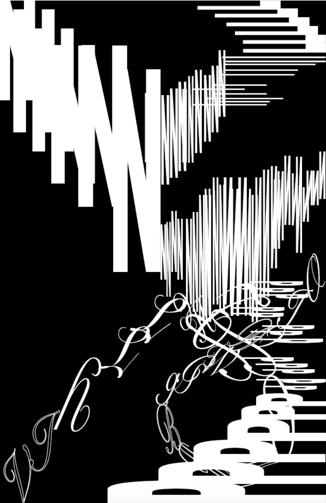
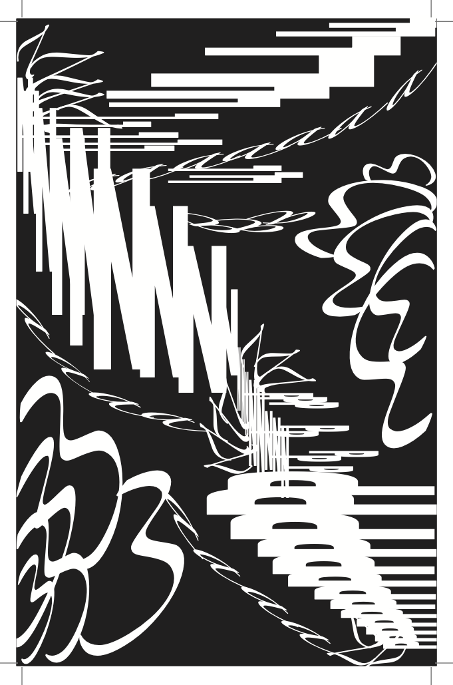

February 13, 2023
This works emphasize the piano sound at the beginning and end of the sound. I used P's and L's to create the imaginary piano. In addition, in this song, there is the mid-slow chorus versus the rap, in which I used the N's to represent the rap. The piece of artwork wraps upward as relayed by the swirl to represent aging. As a continuation, I hope to use bubbles and flow in order to represent the atmosphere of the music.
In this final piece, I used my previous work as a layout. After the first critique, I added structures to make the piece seem more pop and bubbly. As a result, I added curves around the shape edges. The letter creating a swirl I hoped was a representation of parents being a shield for the child, as relayed in the song.
Full Lyrics on Site →In addition, I added an individual family meaning using the numbers 7 and 3 in the artwork. My little brother was born on 7/3/12 which brought a lot of change in the family. I even had relationship problems with my parents, especially my mom. However, as I grew up, I matured and realized that my mom was thinking for the best interest of both her children. At the end of the day, through all our ups and downs, my parents still shielded me from plenty of trouble.
 Return to Classes →